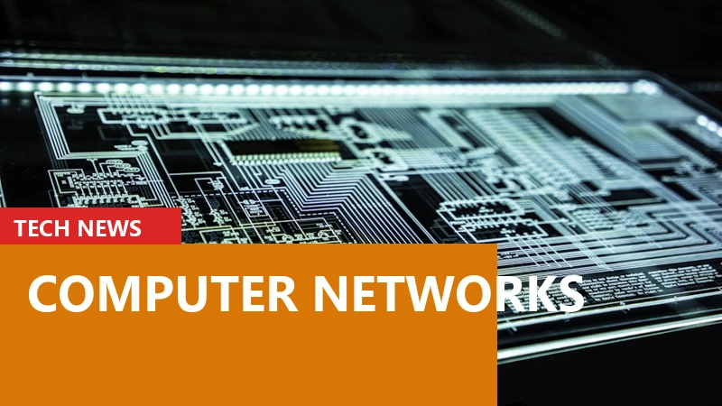

Computer Networks Explained: LAN, WAN, and Wi-Fi Basics

Published: August 13, 2026 • Computer Fundamentals (Chapter 5)

1. The Power of Connection: Moving Beyond the Isolated Machine
In the early days of computing, machines were solitary islands. You could have a multimillion-dollar supercomputer filling an entire room, capable of calculating rocket trajectories, but if you wanted to share the results of those calculations with a colleague in the next room, you had to print them out on physical paper or save them to a magnetic tape and physically walk them over. This physical transportation of data was jokingly referred to as a "Sneakernet" (because you used your sneakers to transport the data).
Today, the idea of an isolated computer is almost unimaginable. A smartphone without a cellular or Wi-Fi connection is just an expensive digital camera and a calculator. The true power of modern computing does not lie strictly in how fast a processor can calculate, but in how quickly and securely a computer can share those calculations with other computers around the globe.
This massive, global sharing of data is made possible by Computer Networks. In Chapter 3, we discussed the Internet as a global phenomenon, but the Internet is actually just millions of smaller, private networks glued together. To truly understand the architecture of the digital world, we must zoom in and examine how these smaller networks function, how they are physically wired, and what invisible rules govern their communication.
2. What Exactly is a Computer Network?
At its most fundamental level, a computer network is simply a group of two or more computing devices connected together for the purpose of sharing resources. These resources can be physical (like ten computers sharing a single printer) or digital (like employees sharing a central database of customer records).
To understand networking, you must understand two core terms:
- Nodes: A node is any physical device connected to the network that can send, receive, or create data. Your laptop is a node. Your smart TV is a node. The network printer is a node. The giant server hosting this website is a node.
- Links (or Media): This is the physical or invisible path that connects the nodes together. It can be a tangible copper Ethernet cable, a fiber-optic strand of glass, or the invisible radio waves of a Wi-Fi or 5G connection.
When nodes are connected via links, they require a common language to understand each other. In networking, these languages are called Protocols. Just as two humans must agree to speak English or Hindi to share ideas, two computers must agree on a protocol (like TCP/IP) to share data without garbling the transmission.
3. LAN (Local Area Network): Your Home and Office
Networks are categorized primarily by their geographical size. The most common network you interact with daily is the LAN (Local Area Network).
A LAN is a network confined to a small, localized geographical area. This could be a single room, a home, an entire office building, or a school campus. When you connect your phone, your laptop, and your smart TV to your home Wi-Fi router, you have created a LAN.
LANs have specific characteristics that make them unique:
- Private Ownership: A LAN is almost always owned, controlled, and maintained by a single person or organization. You own the router in your house; a corporation owns the switches in their office.
- Extreme Speed: Because the geographical distance is so small, data can travel across a LAN at blistering speeds, often reaching 1 Gigabit or even 10 Gigabits per second via standard Ethernet cables.
- High Security: Because the physical cables and wireless signals are contained within a single building, it is much easier to secure a LAN from outside intrusion compared to a public network.
4. WAN (Wide Area Network): Bridging the Globe
If a LAN is an internal road system inside a private gated community, a WAN (Wide Area Network) is the massive system of public highways connecting cities and countries.
A WAN spans a large geographical area—across a city, a country, or the entire globe. Because it is physically impossible for a single company to run their own private copper wire from an office in New York to an office in London, WANs rely on leasing infrastructure from massive telecommunications companies and Internet Service Providers (ISPs).
The most famous and massive example of a WAN is the Internet itself. It is a WAN that connects millions of smaller LANs together.
Because data must travel hundreds or thousands of miles across cables owned by dozens of different companies, WANs are inherently slower than LANs. They suffer from higher latency (delay) and are significantly more vulnerable to interception, which is why data sent over a WAN must always be encrypted.
5. PAN, MAN, and VPNs: The Network Spectrum
While LAN and WAN are the two massive pillars of networking, there are other specialized categories you should be aware of:
- PAN (Personal Area Network): The smallest type of network. A PAN typically covers a radius of just a few meters around a single person. When you connect your wireless headphones to your smartphone via Bluetooth, you have created a PAN.
- MAN (Metropolitan Area Network): Larger than a LAN but smaller than a WAN. A MAN typically covers an entire city or a massive university campus. For example, a city government might lay fiber-optic cables to connect all the public libraries and police stations in the city into a single MAN.
- VPN (Virtual Private Network): This is not a physical geographical network, but a software-defined one. A VPN creates a secure, encrypted "tunnel" across the public WAN (the Internet). If you are working at a coffee shop and use a VPN to connect to your office LAN, your computer acts as if it is physically plugged into the office wall, even though you are miles away.
6. Network Topologies: The Physical Layout
How do we actually wire these computers together? The physical or logical arrangement of nodes in a network is called its Topology. Choosing the right topology balances cost, speed, and reliability.
The Bus Topology: In the early days, computers were connected using a single, long central cable (the bus). Every computer tapped into this main line. It was incredibly cheap to build, but it had a massive flaw: if the main cable broke anywhere, the entire network collapsed.
The Ring Topology: Computers were connected in a closed circle. Data traveled in one direction, passing through each computer until it reached its destination. Like the Bus, if one computer failed, the ring was broken, and the network died.
The Star Topology: This is the most common topology used in the modern world (including your home Wi-Fi). Every single computer is connected to a central device (like a router or a switch). All data must pass through the center. If one computer's cable breaks, only that computer goes offline; the rest of the network survives. However, if the central router breaks, the entire network fails.
The Mesh Topology: The most expensive and robust design. In a full mesh, every single computer is connected directly to every other computer. If a cable breaks, the data simply routes around it using a different path. The Internet itself uses a massive, complex mesh topology, which is why it can survive massive outages without entirely collapsing.
7. The Hardware: Routers, Switches, and Modems
If you look at the blinking box in the corner of your living room, you probably call it "the Wi-Fi." In reality, that single plastic box is usually a combination of three distinct pieces of networking hardware, each performing a totally different job.
The Switch: The Internal Manager
A Switch is a device used strictly inside a LAN. Imagine an office with twenty computers. They all plug their Ethernet cables into a single Switch. The Switch acts as a highly intelligent mailroom. If Computer A wants to send a file to Computer B, the Switch looks at the data, identifies Computer B's exact physical port, and sends the data only to Computer B. It keeps internal traffic organized and fast.
The Router: The Border Patrol
While a Switch connects computers within a single network, a Router connects two different networks together. Most commonly, a Router connects your private Home LAN to the public WAN (the Internet). The Router acts as a border patrol agent. It takes data from your internal computers, translates it, and routes it out to the global internet. It also acts as a firewall, blocking malicious traffic from the outside world from entering your private home network.
The Modem: The Translator
Computers speak in digital signals (1s and 0s). However, the cables running into your house (like traditional telephone lines or coaxial cable TV lines) were originally designed to carry analog waves (sound or video). A Modem (Modulator-Demodulator) sits between your Router and the outside wall. It translates the computer's digital 1s and 0s into analog waves to travel across the city, and translates incoming analog waves back into digital data for your Router.
8. The Magic of Wi-Fi (Wireless Networking)
For decades, networks were strictly bound by physical copper Ethernet cables. The invention of Wi-Fi liberated computing, allowing laptops and smartphones to become truly mobile. But Wi-Fi is not magic; it is simply radio technology, much like the FM radio in a car or a walkie-talkie.
A Wi-Fi router contains a radio transmitter and receiver. When you send an email from your phone, the phone translates the digital data into a radio wave and broadcasts it into the air. The router catches this invisible wave, translates it back into digital data, and sends it through the physical wire in your wall out to the internet.
Modern Wi-Fi operates on two primary radio frequencies:
- 2.4 GHz Band: The older, slower frequency. Its massive advantage is that its longer waves can easily penetrate thick concrete walls and travel long distances across a large house. However, it is easily blocked by microwaves and Bluetooth devices.
- 5 GHz (and 6 GHz) Band: The newer, ultra-fast frequencies. They can carry massive amounts of data (perfect for 4K video streaming), but their shorter radio waves struggle to pass through solid walls and have a much shorter range.
9. The OSI Model: The 7 Layers of Networking
If you pursue computer science academically, you will inevitably encounter the OSI (Open Systems Interconnection) Model. It is a theoretical framework used by engineers to understand how data moves from a software application on one computer, through physical cables, to a software application on another computer.
It breaks the complex process of networking into 7 distinct layers:
- Layer 7 - Application: The software you interact with (e.g., Google Chrome asking for a webpage).
- Layer 6 - Presentation: Translates and encrypts the data (e.g., converting text to ASCII or applying SSL encryption).
- Layer 5 - Session: Establishes and manages the ongoing connection between the two computers.
- Layer 4 - Transport: Chops the massive data into smaller "Segments" and uses TCP to ensure they arrive in the correct order without errors.
- Layer 3 - Network: Turns segments into "Packets" and adds IP Addresses. This is where Routers operate, deciding the best global path.
- Layer 2 - Data Link: Turns packets into "Frames" and adds physical MAC addresses for local delivery. This is where Switches operate.
- Layer 1 - Physical: Converts the data into raw electricity, light pulses (fiber), or radio waves (Wi-Fi) and physically shoots it across the cable.
When you send a message, the data travels down the 7 layers on your computer, across the wire, and then travels up the 7 layers on the receiving computer.
10. MAC Addresses vs. IP Addresses
When discussing networking, people often confuse IP Addresses with MAC Addresses. While both are used to identify computers, they operate at completely different layers of the network and serve entirely different purposes.
A MAC Address (Media Access Control) is the physical, permanent hardware serial number of your computer's network chip. It is burned into the silicon at the factory by the manufacturer. It looks like a string of letters and numbers separated by colons (e.g., 00:1A:2B:3C:4D:5E). A MAC address never changes, no matter where you travel in the world. It is used strictly for local delivery inside a LAN. When a Switch routes data from your laptop to the office printer, it uses the MAC address to find the exact physical port the printer is plugged into.
An IP Address (Internet Protocol), as we learned, is a logical, temporary address assigned by the network you are currently connected to. It is like your temporary hotel room number. If you take your laptop from your home in New York to a cafe in Paris, your MAC address stays exactly the same, but your IP address changes completely to match the Paris network. Routers use IP addresses to navigate the global WAN, and Switches use MAC addresses for the final, physical delivery inside the destination building.
11. Network Security Basics: Protecting the Perimeter
Because networks are designed to share data, they inherently create massive vulnerabilities. If an unauthorized node (a malicious hacker) gains access to a LAN, they can intercept private data, distribute malware, or hijack systems.
Network security relies on a "Defense in Depth" strategy. The first line of defense is the Firewall. A firewall can be a physical hardware device or a software program. It acts as a bouncer at the door of the network. It inspects every single packet of data trying to enter or leave the network and compares it against a strict set of security rules. If a packet looks suspicious or comes from a known malicious IP address, the firewall silently drops it, preventing it from ever reaching your computer.
Inside the network, administrators use Intrusion Detection Systems (IDS) to monitor internal traffic for abnormal behavior (like an employee's computer suddenly trying to download the entire corporate database at 3:00 AM). Ultimately, the strongest network security relies on robust encryption, ensuring that even if data is intercepted while traveling across the network, it appears as unbreakable mathematical gibberish to the attacker.
12. Conclusion: The Invisible Nervous System
Computer networks are the invisible nervous system of modern human civilization. From the smallest Personal Area Network connecting a smartwatch to a phone, to the massive undersea Wide Area Networks routing trillions of financial transactions globally, the principles of nodes, links, and protocols remain the same.
By understanding the physical reality of Routers and Switches, the radio frequencies of Wi-Fi, and the structured logic of the OSI model, you gain the ability to troubleshoot your own connectivity issues and appreciate the monumental engineering required to instantly load a single webpage. In the next chapter, we will explore how we defend these networks as we dive into the fundamentals of cybersecurity.
Founder of TyagiHub. Dedicated to demystifying the most complex topics in computer science and software engineering for the next generation of technologists.
Read full author profile →